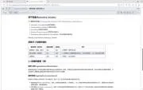

Journal · 2026-04-10
微信聊天记录
吉姆哈克 : py被我搞坏了 2026年4月10日 10:31 万泽宇 : [疑问][疑问][疑问][疑问] 2026年4月10日 10:31 吉姆哈克 : 你看你电脑能运行不？ 2026年4月10日 10:32 吉姆哈克 : 我貌似把Python Launcher卸载了 2026年4月10日 10:35 吉姆哈克 : python "C:\Users\NewtN\Desktop\MD5_Hash_1.0.1\app.py" 2026年4月10日 10:35
吉姆哈克 : I broke Python 2026年4月10日 10:31 万泽宇 : [疑问][疑问][疑问][疑问] 2026年4月10日 10:31 吉姆哈克 : See whether it runs on your computer? 2026年4月10日 10:32 吉姆哈克 : I think I uninstalled the Python Launcher 2026年4月10日 10:35 吉姆哈克 : python "C:\Users\NewtN\Desktop\MD5_Hash_1.0.1\app.py" 2026年4月10日 10:35
吉姆哈克 : J'ai cassé Python 2026年4月10日 10:31 万泽宇 : [疑问][疑问][疑问][疑问] 2026年4月10日 10:31 吉姆哈克 : Tu peux voir si ça tourne sur ton ordi ? 2026年4月10日 10:32 吉姆哈克 : J'ai l'impression d'avoir désinstallé le Python Launcher 2026年4月10日 10:35 吉姆哈克 : python "C:\Users\NewtN\Desktop\MD5_Hash_1.0.1\app.py" 2026年4月10日 10:35
吉姆哈克 : Ich habe Python kaputtgemacht 2026年4月10日 10:31 万泽宇 : [疑问][疑问][疑问][疑问] 2026年4月10日 10:31 吉姆哈克 : Schau mal, ob das auf deinem Rechner läuft? 2026年4月10日 10:32 吉姆哈克 : Ich habe anscheinend den Python Launcher deinstalliert 2026年4月10日 10:35 吉姆哈克 : python "C:\Users\NewtN\Desktop\MD5_Hash_1.0.1\app.py" 2026年4月10日 10:35
吉姆哈克 : 这也行不通 2026年4月10日 10:36
吉姆哈克 : That doesn't work either 2026年4月10日 10:36
吉姆哈克 : Ça ne marche pas non plus 2026年4月10日 10:36
吉姆哈克 : Das funktioniert auch nicht 2026年4月10日 10:36
吉姆哈克 : 我又修好了 引用：我貌似把Python Launcher卸载了 2026年4月10日 10:38 吉姆哈克 : 可以讲解了 2026年4月10日 10:38 焦嘉禾 : 可以了吗 2026年4月10日 10:39 吉姆哈克 : 我们是第四组吗？ 2026年4月10日 10:42 焦嘉禾 : 是 2026年4月10日 10:42
吉姆哈克 : I fixed it again Quote: I seem to have uninstalled the Python Launcher 2026年4月10日 10:38 吉姆哈克 : Ready to present 2026年4月10日 10:38 焦嘉禾 : Is it working now? 2026年4月10日 10:39 吉姆哈克 : Are we Group Four? 2026年4月10日 10:42 焦嘉禾 : Yep 2026年4月10日 10:42
吉姆哈克 : Je l'ai encore réparé Citation : J'ai dû désinstaller le Python Launcher 2026年4月10日 10:38 吉姆哈克 : On peut présenter 2026年4月10日 10:38 焦嘉禾 : Ça marche maintenant ? 2026年4月10日 10:39 吉姆哈克 : On est le groupe quatre ? 2026年4月10日 10:42 焦嘉禾 : Oui 2026年4月10日 10:42
吉姆哈克 : Ich hab's wieder repariert Zitat: Ich hab anscheinend den Python Launcher deinstalliert 2026年4月10日 10:38 吉姆哈克 : Kann loslegen mit dem Vortrag 2026年4月10日 10:38 焦嘉禾 : Geht's jetzt? 2026年4月10日 10:39 吉姆哈克 : Sind wir Gruppe vier? 2026年4月10日 10:42 焦嘉禾 : Ja 2026年4月10日 10:42
吉姆哈克 : [图片] 2026年4月10日 12:19 吉姆哈克 : [图片] 2026年4月10日 12:19 吉姆哈克 : [图片] 2026年4月10日 12:19 吉姆哈克 : [图片] 2026年4月10日 12:19 吉姆哈克 : [图片] 2026年4月10日 12:19 吉姆哈克 : [图片] 2026年4月10日 12:19 吉姆哈克 : [图片] 2026年4月10日 12:19 吉姆哈克 : [图片] 2026年4月10日 12:19 吉姆哈克 : [图片] 2026年4月10日 12:19 吉姆哈克 : [图片] 2026年4月10日 12:19 吉姆哈克 : [图片] 2026年4月10日 12:19 吉姆哈克 : [图片] 2026年4月10日 12:19 吉姆哈克 : [图片] 2026年4月10日 12:19 吉姆哈克 : 我把本地的OpenClaw，还有六个bot，抢救回来了！ 2026年4月10日 12:19 吉姆哈克 : 2026.3.31，我打算用到养老了 2026年4月10日 12:20 吉姆哈克 : [图片] 2026年4月10日 12:20 吉姆哈克 : 但目前出现了一点问题 2026年4月10日 12:21 吉姆哈克 : 他安装不了技能了 2026年4月10日 12:21 吉姆哈克 : 我不行了，我伤心死了 2026年4月10日 12:33 吉姆哈克 : 养了又死，死了又养 2026年4月10日 12:33 吉姆哈克 : 那再来一次君子协议吗？ 2026年4月10日 12:33
吉姆哈克 : [图片] 2026年4月10日 12:19 吉姆哈克 : [图片] 2026年4月10日 12:19 吉姆哈克 : [图片] 2026年4月10日 12:19 吉姆哈克 : [图片] 2026年4月10日 12:19 吉姆哈克 : [图片] 2026年4月10日 12:19 吉姆哈克 : [图片] 2026年4月10日 12:19 吉姆哈克 : [图片] 2026年4月10日 12:19 吉姆哈克 : [图片] 2026年4月10日 12:19 吉姆哈克 : [图片] 2026年4月10日 12:19 吉姆哈克 : [图片] 2026年4月10日 12:19 吉姆哈克 : [图片] 2026年4月10日 12:19 吉姆哈克 : [图片] 2026年4月10日 12:19 吉姆哈克 : [图片] 2026年4月10日 12:19 吉姆哈克 : I rescued my local OpenClaw, along with six bots! 2026年4月10日 12:19 吉姆哈克 : 2026.3.31 — I plan to use this one till I retire 2026年4月10日 12:20 吉姆哈克 : [图片] 2026年4月10日 12:20 吉姆哈克 : But there's a little problem right now 2026年4月10日 12:21 吉姆哈克 : It can't install skills anymore 2026年4月10日 12:21 吉姆哈克 : I can't take it, I'm heartbroken 2026年4月10日 12:33 吉姆哈克 : Raise it and it dies, it dies and I raise it again 2026年4月10日 12:33 吉姆哈克 : So another gentleman's agreement, then? 2026年4月10日 12:33
吉姆哈克 : [图片] 2026年4月10日 12:19 吉姆哈克 : [图片] 2026年4月10日 12:19 吉姆哈克 : [图片] 2026年4月10日 12:19 吉姆哈克 : [图片] 2026年4月10日 12:19 吉姆哈克 : [图片] 2026年4月10日 12:19 吉姆哈克 : [图片] 2026年4月10日 12:19 吉姆哈克 : [图片] 2026年4月10日 12:19 吉姆哈克 : [图片] 2026年4月10日 12:19 吉姆哈克 : [图片] 2026年4月10日 12:19 吉姆哈克 : [图片] 2026年4月10日 12:19 吉姆哈克 : [图片] 2026年4月10日 12:19 吉姆哈克 : [图片] 2026年4月10日 12:19 吉姆哈克 : [图片] 2026年4月10日 12:19 吉姆哈克 : J'ai sauvé mon OpenClaw local, ainsi que six bots ! 2026年4月10日 12:19 吉姆哈克 : 2026.3.31, je compte l'utiliser jusqu'à la retraite 2026年4月10日 12:20 吉姆哈克 : [图片] 2026年4月10日 12:20 吉姆哈克 : Mais il y a un petit souci pour l'instant 2026年4月10日 12:21 吉姆哈克 : Il n'arrive plus à installer de compétences 2026年4月10日 12:21 吉姆哈克 : Je n'en peux plus, j'ai le cœur brisé 2026年4月10日 12:33 吉姆哈克 : Je l'élève et il meurt, il meurt et je l'élève encore 2026年4月10日 12:33 吉姆哈克 : Alors, un nouvel accord à l'amiable ? 2026年4月10日 12:33
吉姆哈克 : [图片] 2026年4月10日 12:19 吉姆哈克 : [图片] 2026年4月10日 12:19 吉姆哈克 : [图片] 2026年4月10日 12:19 吉姆哈克 : [图片] 2026年4月10日 12:19 吉姆哈克 : [图片] 2026年4月10日 12:19 吉姆哈克 : [图片] 2026年4月10日 12:19 吉姆哈克 : [图片] 2026年4月10日 12:19 吉姆哈克 : [图片] 2026年4月10日 12:19 吉姆哈克 : [图片] 2026年4月10日 12:19 吉姆哈克 : [图片] 2026年4月10日 12:19 吉姆哈克 : [图片] 2026年4月10日 12:19 吉姆哈克 : [图片] 2026年4月10日 12:19 吉姆哈克 : [图片] 2026年4月10日 12:19 吉姆哈克 : Ich hab mein lokales OpenClaw mitsamt sechs Bots gerettet! 2026年4月10日 12:19 吉姆哈克 : 2026.3.31, das hier nutze ich bis zur Rente 2026年4月10日 12:20 吉姆哈克 : [图片] 2026年4月10日 12:20 吉姆哈克 : Aber gerade gibt es ein kleines Problem 2026年4月10日 12:21 吉姆哈克 : Er kann keine Skills mehr installieren 2026年4月10日 12:21 吉姆哈克 : Ich kann nicht mehr, ich bin todunglücklich 2026年4月10日 12:33 吉姆哈克 : Aufgezogen stirbt es, gestorben zieh ich's wieder auf 2026年4月10日 12:33 吉姆哈克 : Also noch eine Gentleman-Vereinbarung? 2026年4月10日 12:33
吉姆哈克 : 但目前出现了一点问题 2026年4月10日 12:21 吉姆哈克 : 他安装不了技能了 2026年4月10日 12:21 吉姆哈克 : 我不行了，我伤心死了 2026年4月10日 12:33 吉姆哈克 : 养了又死，死了又养 2026年4月10日 12:33 吉姆哈克 : 那再来一次君子协议吗？ 2026年4月10日 12:33 吉姆哈克 : [叹气][叹气][叹气] 2026年4月10日 12:33 吉姆哈克 : 我再也不更新了 2026年4月10日 12:36 吉姆哈克 : 再也不让他操作他自己 2026年4月10日 12:36 吉姆哈克 : 小龙虾自己搓自己，还能搓坏 2026年4月10日 12:37 吉姆哈克 : [流泪][流泪][流泪] 2026年4月10日 12:37 龙悦科技小马哥 : [旺柴][旺柴][旺柴] 2026年4月10日 13:06 龙悦科技小马哥 : 哈哈哈哈哈 2026年4月10日 13:06 龙悦科技小马哥 : 可以的 小伙子 2026年4月10日 13:06
吉姆哈克 : But there's a little problem right now 2026年4月10日 12:21 吉姆哈克 : It can't install skills anymore 2026年4月10日 12:21 吉姆哈克 : I can't take it, I'm heartbroken 2026年4月10日 12:33 吉姆哈克 : Raise it and it dies, it dies and I raise it again 2026年4月10日 12:33 吉姆哈克 : So another gentleman's agreement, then? 2026年4月10日 12:33 吉姆哈克 : [叹气][叹气][叹气] 2026年4月10日 12:33 吉姆哈克 : I'm never updating again 2026年4月10日 12:36 吉姆哈克 : Never letting it operate on itself again 2026年4月10日 12:36 吉姆哈克 : The little lobster tinkered with its own self and still managed to break 2026年4月10日 12:37 吉姆哈克 : [流泪][流泪][流泪] 2026年4月10日 12:37 龙悦科技小马哥 : [旺柴][旺柴][旺柴] 2026年4月10日 13:06 龙悦科技小马哥 : Hahahaha 2026年4月10日 13:06 龙悦科技小马哥 : You got it, kid 2026年4月10日 13:06
吉姆哈克 : Mais il y a un petit souci pour l'instant 2026年4月10日 12:21 吉姆哈克 : Il n'arrive plus à installer de compétences 2026年4月10日 12:21 吉姆哈克 : Je n'en peux plus, j'ai le cœur brisé 2026年4月10日 12:33 吉姆哈克 : Je l'élève et il meurt, il meurt et je l'élève encore 2026年4月10日 12:33 吉姆哈克 : Alors, un nouvel accord à l'amiable ? 2026年4月10日 12:33 吉姆哈克 : [叹气][叹气][叹气] 2026年4月10日 12:33 吉姆哈克 : Je ne mets plus jamais à jour 2026年4月10日 12:36 吉姆哈克 : Je ne le laisse plus jamais agir sur lui-même 2026年4月10日 12:36 吉姆哈克 : Le petit homard a bricolé sur lui-même et a quand même réussi à se casser 2026年4月10日 12:37 吉姆哈克 : [流泪][流泪][流泪] 2026年4月10日 12:37 龙悦科技小马哥 : [旺柴][旺柴][旺柴] 2026年4月10日 13:06 龙悦科技小马哥 : Hahahaha 2026年4月10日 13:06 龙悦科技小马哥 : C'est tout bon, petit 2026年4月10日 13:06
吉姆哈克 : Aber gerade gibt es ein kleines Problem 2026年4月10日 12:21 吉姆哈克 : Er kann keine Skills mehr installieren 2026年4月10日 12:21 吉姆哈克 : Ich kann nicht mehr, ich bin todunglücklich 2026年4月10日 12:33 吉姆哈克 : Aufgezogen stirbt es, gestorben zieh ich's wieder auf 2026年4月10日 12:33 吉姆哈克 : Also noch eine Gentleman-Vereinbarung? 2026年4月10日 12:33 吉姆哈克 : [叹气][叹气][叹气] 2026年4月10日 12:33 吉姆哈克 : Ich aktualisiere nie wieder 2026年4月10日 12:36 吉姆哈克 : Lasse ihn nie wieder an sich selbst herumwerken 2026年4月10日 12:36 吉姆哈克 : Der kleine Hummer hat an sich selbst herumgebastelt und es trotzdem kaputt gekriegt 2026年4月10日 12:37 吉姆哈克 : [流泪][流泪][流泪] 2026年4月10日 12:37 龙悦科技小马哥 : [旺柴][旺柴][旺柴] 2026年4月10日 13:06 龙悦科技小马哥 : Hahahaha 2026年4月10日 13:06 龙悦科技小马哥 : Geht klar, Junge 2026年4月10日 13:06

万泽宇 : 这个怎么样 2026年4月10日 15:54 吉姆哈克 : 引用： 2026年4月10日 15:54 吉姆哈克 : 但是会不会撞题欸？ 2026年4月10日 15:55 吉姆哈克 : 纽约太有名了 2026年4月10日 15:55 吉姆哈克 : 陈老师会提什么问题？ 引用： 2026年4月10日 15:55 吉姆哈克 : 根本没有问课件内容 2026年4月10日 15:58 吉姆哈克 : 应该不会撞题吧 引用：这个怎么样 2026年4月10日 15:59 吉姆哈克 : 要是真撞选题了，我们就讲得酣畅淋漓一点 2026年4月10日 15:59 万泽宇 : 组员1 (组长) 框架与理论统筹 1. 确定报告逻辑主线2. 撰写理论分析（RBM/电子政务）3. 设计汇报互动问题 逻辑严密性、理论深度 整理标准格式参考文献 组员2、组长 官方数据分析师 1. 下载 2023/2024 MMR 报告及数据2. 提取安全、卫生等核心指标趋势图3. 数据翻译与解读 真实数据图表、趋势分析 整理标准格式参考文献（含 Dashboard 截图） 组员3、4 政策与评价研究员 1. 挖掘 2021 年后改革细节（如市民反馈机制）2. 搜集英文媒体（NY Times等）评价 案例深度、正反视角 整理标准格式参考文献（含 Dashboard 截图） 2026年4月10日 16:14 万泽宇 : 分工了哈 2026年4月10日 16:15 蒋鹏伟 : 我来组员3、4那个任务 2026年4月10日 16:17
万泽宇 : How about this one 2026年4月10日 15:54 吉姆哈克 : Quote: 2026年4月10日 15:54 吉姆哈克 : But won't the topics overlap? 2026年4月10日 15:55 吉姆哈克 : New York's too famous 2026年4月10日 15:55 吉姆哈克 : What questions will Teacher Chen ask? Quote: 2026年4月10日 15:55 吉姆哈克 : Didn't ask about the slide content at all 2026年4月10日 15:58 吉姆哈克 : Probably won't overlap, I think Quote: How about this one 2026年4月10日 15:59 吉姆哈克 : If we really do land the same topic, we'll just present with extra gusto 2026年4月10日 15:59 万泽宇 : Member 1 (Leader) Framework & theory coordination: 1. Define the report's main logical thread 2. Write the theoretical analysis (RBM/e-government) 3. Design interactive questions for the presentation — logical rigor, theoretical depth Compile standard-format references Member 2 & Leader, official data analyst: 1. Download the 2023/2024 MMR reports and data 2. Extract trend charts for core indicators such as safety and health 3. Data translation and interpretation — real-data charts, trend analysis Compile standard-format references (incl. Dashboard screenshots) Members 3 & 4, policy & evaluation researchers: 1. Dig into post-2021 reform details (e.g. citizen feedback mechanisms) 2. Gather English-language media coverage (NY Times etc.) — case depth, pro-and-con perspectives; compile standard-format references (incl. Dashboard screenshots) 2026年4月10日 16:14 万泽宇 : Work's divided up 2026年4月10日 16:15 蒋鹏伟 : I'll take the Members 3 & 4 task 2026年4月10日 16:17
万泽宇 : Et celui-là 2026年4月10日 15:54 吉姆哈克 : Citation : 2026年4月10日 15:54 吉姆哈克 : Mais les sujets ne risquent-ils pas de se chevaucher ? 2026年4月10日 15:55 吉姆哈克 : New York est trop connu 2026年4月10日 15:55 吉姆哈克 : Quelles questions M. Chen va-t-il poser ? Citation : 2026年4月10日 15:55 吉姆哈克 : Il n'a pas du tout interrogé le contenu des diapos 2026年4月10日 15:58 吉姆哈克 : Ça ne devrait pas se chevaucher Citation : Et celui-là 2026年4月10日 15:59 吉姆哈克 : Si on tombe vraiment sur le même sujet, on présentera avec encore plus d'allant 2026年4月10日 15:59 万泽宇 : Membre 1 (chef de groupe) Coordination cadre & théorie : 1. Définir le fil logique du rapport 2. Rédiger l'analyse théorique (RBM/e-gouvernement) 3. Concevoir les questions interactives de la présentation — rigueur logique, profondeur théorique Dresser les références au format standard Membre 2 & chef, analyste des données officielles : 1. Télécharger les rapports et données MMR 2023/2024 2. Extraire les courbes de tendance des indicateurs clés (sécurité, santé, etc.) 3. Traduire et interpréter les données — graphiques réels, analyse de tendance Dresser les références au format standard (captures Dashboard incluses) Membres 3 & 4, chercheurs politique & évaluation : 1. Fouiller les détails des réformes post-2021 (mécanisme de retour des citoyens, etc.) 2. Recueillir les avis de la presse anglophone (NY Times etc.) — profondeur des cas, points de vue pour et contre ; dresser les références au format standard (captures Dashboard incluses) 2026年4月10日 16:14 万泽宇 : On s'est réparti le boulot 2026年4月10日 16:15 蒋鹏伟 : Je prends la tâche des membres 3 et 4 2026年4月10日 16:17
万泽宇 : Wie wär's hiermit 2026年4月10日 15:54 吉姆哈克 : Zitat: 2026年4月10日 15:54 吉姆哈克 : Aber überschneiden sich die Themen nicht? 2026年4月10日 15:55 吉姆哈克 : New York ist zu berühmt 2026年4月10日 15:55 吉姆哈克 : Welche Fragen wird Lehrer Chen stellen? Zitat: 2026年4月10日 15:55 吉姆哈克 : Hat gar nicht nach dem Foliensatz gefragt 2026年4月10日 15:58 吉姆哈克 : Wird sich wohl nicht überschneiden Zitat: Wie wär's hiermit 2026年4月10日 15:59 吉姆哈克 : Wenn wir wirklich dasselbe Thema erwischen, präsentieren wir eben mit extra viel Schwung 2026年4月10日 15:59 万泽宇 : Mitglied 1 (Gruppenleiter) Rahmen & theoretische Koordination: 1. Logischen Hauptstrang des Berichts festlegen 2. Theoretische Analyse schreiben (RBM/E-Government) 3. Interaktive Fragen für den Vortrag gestalten — logische Stringenz, theoretische Tiefe Literatur im Standardformat zusammenstellen Mitglied 2 & Leiter, offizieller Datenanalyst: 1. MMR-Berichte und Daten 2023/2024 herunterladen 2. Trenddiagramme zu Kernindikatoren wie Sicherheit und Gesundheit extrahieren 3. Daten übersetzen und deuten — Echt-Daten-Diagramme, Trendanalyse Literatur im Standardformat zusammenstellen (inkl. Dashboard-Screenshots) Mitglieder 3 & 4, Politik- & Evaluationsforscher: 1. Reformdetails nach 2021 ausgraben (z. B. Bürgerfeedback-Mechanismus) 2. Bewertungen englischsprachiger Medien (NY Times usw.) sammeln — Falltiefe, Pro- und Kontra-Perspektiven; Literatur im Standardformat zusammenstellen (inkl. Dashboard-Screenshots) 2026年4月10日 16:14 万泽宇 : Die Arbeit ist aufgeteilt 2026年4月10日 16:15 蒋鹏伟 : Ich übernehme die Aufgabe von Mitglied 3 und 4 2026年4月10日 16:17
吉姆哈克 : Hihi 2026年4月10日 18:31 吉姆哈克 : 哥们儿 2026年4月10日 18:31 吉姆哈克 : 请问班长坐在哪里呀？ 2026年4月10日 18:31 吉姆哈克 : [疑问][疑问][疑问] 2026年4月10日 18:31 吉姆哈克 : 我刚知道了 2026年4月10日 18:33 吉姆哈克 : 太感谢你了！ 2026年4月10日 18:33 张旭 : 没看消息 2026年4月10日 18:34
吉姆哈克 : Hihi 2026年4月10日 18:31 吉姆哈克 : Bro 2026年4月10日 18:31 吉姆哈克 : Could you tell me where the class monitor sits? 2026年4月10日 18:31 吉姆哈克 : [疑问][疑问][疑问] 2026年4月10日 18:31 吉姆哈克 : I just found out 2026年4月10日 18:33 吉姆哈克 : Thanks so much! 2026年4月10日 18:33 张旭 : Didn't see the message 2026年4月10日 18:34
吉姆哈克 : Hihi 2026年4月10日 18:31 吉姆哈克 : Mec 2026年4月10日 18:31 吉姆哈克 : Tu sais où est assis le délégué, s'il te plaît ? 2026年4月10日 18:31 吉姆哈克 : [疑问][疑问][疑问] 2026年4月10日 18:31 吉姆哈克 : Je viens de l'apprendre 2026年4月10日 18:33 吉姆哈克 : Merci infiniment ! 2026年4月10日 18:33 张旭 : Je n'avais pas vu le message 2026年4月10日 18:34
吉姆哈克 : Hihi 2026年4月10日 18:31 吉姆哈克 : Alter 2026年4月10日 18:31 吉姆哈克 : Wo sitzt denn der Klassensprecher? 2026年4月10日 18:31 吉姆哈克 : [疑问][疑问][疑问] 2026年4月10日 18:31 吉姆哈克 : Ich hab's gerade erfahren 2026年4月10日 18:33 吉姆哈克 : Vielen, vielen Dank! 2026年4月10日 18:33 张旭 : Hab die Nachricht nicht gesehen 2026年4月10日 18:34
阿力 行管 : 整理一下 然后晚上发到群里 2026年4月10日 19:17 阿力 行管 : [呲牙][呲牙] 2026年4月10日 19:17 吉姆哈克 : 我周五周六 2026年4月10日 19:17 吉姆哈克 : 全天满课 2026年4月10日 19:17 吉姆哈克 : 我打算明天中午 2026年4月10日 19:17 吉姆哈克 : 极限一波 2026年4月10日 19:17 吉姆哈克 : 去华安里 2026年4月10日 19:17 吉姆哈克 : 在龙的基础上 2026年4月10日 19:17 阿力 行管 : 我感觉 2026年4月10日 19:17 阿力 行管 : 没必要去了 2026年4月10日 19:17 吉姆哈克 : 补拍一些细节照片 引用：在龙的基础上 2026年4月10日 19:17
阿力 行管 : Tidy it up, then send it to the group tonight 2026年4月10日 19:17 阿力 行管 : [呲牙][呲牙] 2026年4月10日 19:17 吉姆哈克 : Friday and Saturday for me 2026年4月10日 19:17 吉姆哈克 : Classes all day both days 2026年4月10日 19:17 吉姆哈克 : I'm planning tomorrow noon 2026年4月10日 19:17 吉姆哈克 : For an all-out sprint 2026年4月10日 19:17 吉姆哈克 : To Hua'anli 2026年4月10日 19:17 吉姆哈克 : Building on Long's 2026年4月10日 19:17 阿力 行管 : I get the feeling 2026年4月10日 19:17 阿力 行管 : There's no need to go 2026年4月10日 19:17 吉姆哈克 : Shoot some extra detail shots Quote: Building on Long's 2026年4月10日 19:17
阿力 行管 : Mets ça au propre puis envoie au groupe ce soir 2026年4月10日 19:17 阿力 行管 : [呲牙][呲牙] 2026年4月10日 19:17 吉姆哈克 : Moi vendredi et samedi 2026年4月10日 19:17 吉姆哈克 : Cours toute la journée 2026年4月10日 19:17 吉姆哈克 : Je compte demain midi 2026年4月10日 19:17 吉姆哈克 : Faire un sprint de l'extrême 2026年4月10日 19:17 吉姆哈克 : Aller à Hua'anli 2026年4月10日 19:17 吉姆哈克 : En repartant de ce que Long a fait 2026年4月10日 19:17 阿力 行管 : J'ai l'impression 2026年4月10日 19:17 阿力 行管 : Que ce n'est pas la peine d'y aller 2026年4月10日 19:17 吉姆哈克 : Reprendre quelques photos de détail Citation : En repartant de ce que Long a fait 2026年4月10日 19:17
阿力 行管 : Bring es in Ordnung und schick es abends in die Gruppe 2026年4月10日 19:17 阿力 行管 : [呲牙][呲牙] 2026年4月10日 19:17 吉姆哈克 : Ich hab Freitag und Samstag 2026年4月10日 19:17 吉姆哈克 : Den ganzen Tag Kurse 2026年4月10日 19:17 吉姆哈克 : Ich hab morgen Mittag vor 2026年4月10日 19:17 吉姆哈克 : Einen Extremsprint hinzulegen 2026年4月10日 19:17 吉姆哈克 : Nach Hua'anli zu fahren 2026年4月10日 19:17 吉姆哈克 : Auf der Grundlage von Longs Material 2026年4月10日 19:17 阿力 行管 : Ich hab das Gefühl 2026年4月10日 19:17 阿力 行管 : Es ist nicht nötig hinzugehen 2026年4月10日 19:17 吉姆哈克 : Ein paar Detailfotos nachschießen Zitat: Auf der Grundlage von Longs Material 2026年4月10日 19:17
吉姆哈克 : 好的好的，九点钟聊啦 引用：九点 2026年4月10日 16:02 龙悦科技小马哥 : 嗯 2026年4月10日 16:02 吉姆哈克 : 2026.3.31 2026年4月10日 20:57 吉姆哈克 : 能要求他自己安装技能吗？ 2026年4月10日 20:58 吉姆哈克 : 大伙汁 2026年4月10日 21:00 吉姆哈克 : 在吗？ 2026年4月10日 21:00 吉姆哈克 : 还有那个飞书龙虾机器人 2026年4月10日 21:02 吉姆哈克 : 是不是不能发文件到手机上啊？ 2026年4月10日 21:02 吉姆哈克 : 九点钟到了 2026年4月10日 21:02 吉姆哈克 : 好吧，你生意真好 2026年4月10日 21:11 吉姆哈克 : 我先刷会儿哔哩 2026年4月10日 21:12 吉姆哈克 : 还有，那个定时任务 2026年4月10日 21:14
吉姆哈克 : Alright alright, let's talk at nine Quote: Nine 2026年4月10日 16:02 龙悦科技小马哥 : Mm 2026年4月10日 16:02 吉姆哈克 : 2026.3.31 2026年4月10日 20:57 吉姆哈克 : Can I tell it to install skills itself? 2026年4月10日 20:58 吉姆哈克 : Folks 2026年4月10日 21:00 吉姆哈克 : You there? 2026年4月10日 21:00 吉姆哈克 : And that Feishu lobster bot 2026年4月10日 21:02 吉姆哈克 : It can't send files to the phone, can it? 2026年4月10日 21:02 吉姆哈克 : It's nine o'clock 2026年4月10日 21:02 吉姆哈克 : Alright, you're swamped with business 2026年4月10日 21:11 吉姆哈克 : I'll scroll Bilibili for a bit first 2026年4月10日 21:12 吉姆哈克 : Also, that scheduled task 2026年4月10日 21:14
吉姆哈克 : D'accord d'accord, on parle à neuf heures Citation : Neuf heures 2026年4月10日 16:02 龙悦科技小马哥 : Mm 2026年4月10日 16:02 吉姆哈克 : 2026.3.31 2026年4月10日 20:57 吉姆哈克 : Je peux lui demander d'installer les compétences lui-même ? 2026年4月10日 20:58 吉姆哈克 : Les amis 2026年4月10日 21:00 吉姆哈克 : Vous êtes là ? 2026年4月10日 21:00 吉姆哈克 : Et ce robot homard Feishu 2026年4月10日 21:02 吉姆哈克 : Il ne peut pas envoyer de fichiers sur le téléphone, c'est ça ? 2026年4月10日 21:02 吉姆哈克 : Il est neuf heures 2026年4月10日 21:02 吉姆哈克 : Bon, tu as beaucoup de travail 2026年4月10日 21:11 吉姆哈克 : Je vais d'abord scroller un peu sur Bilibili 2026年4月10日 21:12 吉姆哈克 : Aussi, cette tâche programmée 2026年4月10日 21:14
吉姆哈克 : Na gut na gut, wir reden um neun Zitat: Neun 2026年4月10日 16:02 龙悦科技小马哥 : Mm 2026年4月10日 16:02 吉姆哈克 : 2026.3.31 2026年4月10日 20:57 吉姆哈克 : Kann ich ihn bitten, Skills selbst zu installieren? 2026年4月10日 20:58 吉姆哈克 : Leute 2026年4月10日 21:00 吉姆哈克 : Seid ihr da? 2026年4月10日 21:00 吉姆哈克 : Und dieser Feishu-Hummer-Roboter 2026年4月10日 21:02 吉姆哈克 : Der kann keine Dateien aufs Handy schicken, oder? 2026年4月10日 21:02 吉姆哈克 : Es ist neun Uhr 2026年4月10日 21:02 吉姆哈克 : Na gut, du hast ja viel zu tun 2026年4月10日 21:11 吉姆哈克 : Ich scroll erst ein bisschen Bilibili 2026年4月10日 21:12 吉姆哈克 : Außerdem diese zeitgesteuerte Aufgabe 2026年4月10日 21:14
吉姆哈克 : 是不是不能发文件到手机上啊？ 2026年4月10日 21:02 吉姆哈克 : 九点钟到了 2026年4月10日 21:02 吉姆哈克 : 好吧，你生意真好 2026年4月10日 21:11 吉姆哈克 : 我先刷会儿哔哩 2026年4月10日 21:12 吉姆哈克 : 还有，那个定时任务 2026年4月10日 21:14 吉姆哈克 : 你会设置吗？ 2026年4月10日 21:14 吉姆哈克 : 能让龙虾每隔半小时直接跑吗？ 2026年4月10日 21:14 吉姆哈克 : 我就默认Token不要钱好吧 2026年4月10日 21:15 吉姆哈克 : 反正要么包月，要么充了钱 2026年4月10日 21:15 吉姆哈克 : 直接榨干Token的最后一滴价值就行了 2026年4月10日 21:16 吉姆哈克 : 我想让他，定时给我发送实时热点新闻 引用：还有，那个定时任务 2026年4月10日 21:17 吉姆哈克 : 或者定时运行一个小爬虫 2026年4月10日 21:18 吉姆哈克 : [语音或视频通话] 2026年4月10日 21:30 龙悦科技小马哥 : 来了 2026年4月10日 21:31 吉姆哈克 : 所以我是要发远程吗？ 2026年4月10日 21:31
吉姆哈克 : It can't send files to the phone, can it? 2026年4月10日 21:02 吉姆哈克 : It's nine o'clock 2026年4月10日 21:02 吉姆哈克 : Alright, you're swamped with business 2026年4月10日 21:11 吉姆哈克 : I'll scroll Bilibili for a bit first 2026年4月10日 21:12 吉姆哈克 : Also, that scheduled task 2026年4月10日 21:14 吉姆哈克 : Do you know how to set it up? 2026年4月10日 21:14 吉姆哈克 : Can I make the lobster just run every half hour? 2026年4月10日 21:14 吉姆哈克 : I'll just assume tokens are free, fine 2026年4月10日 21:15 吉姆哈克 : Either way it's a flat monthly rate or already paid up 2026年4月10日 21:15 吉姆哈克 : Just squeeze the last drop of value out of the tokens 2026年4月10日 21:16 吉姆哈克 : I want it to send me real-time trending news on a schedule Quote: Also, that scheduled task 2026年4月10日 21:17 吉姆哈克 : Or run a little crawler on a schedule 2026年4月10日 21:18 吉姆哈克 : [语音或视频通话] 2026年4月10日 21:30 龙悦科技小马哥 : Coming 2026年4月10日 21:31 吉姆哈克 : So do I need to launch a remote session? 2026年4月10日 21:31
吉姆哈克 : Il ne peut pas envoyer de fichiers sur le téléphone, c'est ça ? 2026年4月10日 21:02 吉姆哈克 : Il est neuf heures 2026年4月10日 21:02 吉姆哈克 : Bon, tu as beaucoup de travail 2026年4月10日 21:11 吉姆哈克 : Je vais d'abord scroller un peu sur Bilibili 2026年4月10日 21:12 吉姆哈克 : Aussi, cette tâche programmée 2026年4月10日 21:14 吉姆哈克 : Tu sais comment la configurer ? 2026年4月10日 21:14 吉姆哈克 : Je peux faire tourner le homard toutes les demi-heures directement ? 2026年4月10日 21:14 吉姆哈克 : Je pars du principe que les tokens sont gratuits, voilà 2026年4月10日 21:15 吉姆哈克 : De toute façon c'est soit au forfait, soit déjà rechargé 2026年4月10日 21:15 吉姆哈克 : Autant presser chaque dernière goutte de valeur des tokens 2026年4月10日 21:16 吉姆哈克 : Je veux qu'il m'envoie les actualités chaudes en temps réel à heures fixes Citation : Aussi, cette tâche programmée 2026年4月10日 21:17 吉姆哈克 : Ou lancer un petit crawler à heures fixes 2026年4月10日 21:18 吉姆哈克 : [语音或视频通话] 2026年4月10日 21:30 龙悦科技小马哥 : J'arrive 2026年4月10日 21:31 吉姆哈克 : Donc je dois lancer une session à distance ? 2026年4月10日 21:31
吉姆哈克 : Der kann keine Dateien aufs Handy schicken, oder? 2026年4月10日 21:02 吉姆哈克 : Es ist neun Uhr 2026年4月10日 21:02 吉姆哈克 : Na gut, du hast ja viel zu tun 2026年4月10日 21:11 吉姆哈克 : Ich scroll erst ein bisschen Bilibili 2026年4月10日 21:12 吉姆哈克 : Außerdem diese zeitgesteuerte Aufgabe 2026年4月10日 21:14 吉姆哈克 : Weißt du, wie man das einstellt? 2026年4月10日 21:14 吉姆哈克 : Kann ich den Hummer einfach jede halbe Stunde laufen lassen? 2026年4月10日 21:14 吉姆哈克 : Ich nehme einfach an, Tokens kosten nichts, okay 2026年4月10日 21:15 吉姆哈克 : Ist eh entweder Monatspauschale oder schon aufgeladen 2026年4月10日 21:15 吉姆哈克 : Einfach den letzten Tropfen Wert aus den Tokens pressen 2026年4月10日 21:16 吉姆哈克 : Ich will, dass er mir zeitgesteuert Echtzeit-Trendnachrichten schickt Zitat: Außerdem diese zeitgesteuerte Aufgabe 2026年4月10日 21:17 吉姆哈克 : Oder zeitgesteuert einen kleinen Crawler laufen lassen 2026年4月10日 21:18 吉姆哈克 : [语音或视频通话] 2026年4月10日 21:30 龙悦科技小马哥 : Bin da 2026年4月10日 21:31 吉姆哈克 : Also muss ich eine Fernsitzung starten? 2026年4月10日 21:31